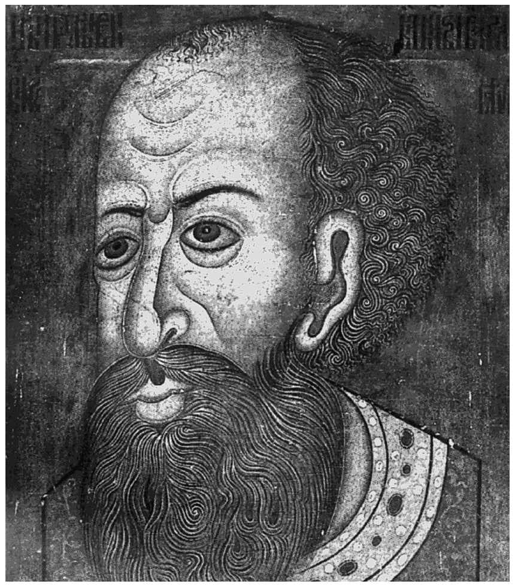

大约在1500年前，俄罗斯人从他们在德涅斯特河、第聂伯河、涅曼河和西德维纳河上游区的发源地向东推进。他们从发源地以巨大的弧形呈扇状展开，在辽阔平原的召唤下，继续前进到北面的北冰洋沿岸、南面的黑海和东面的乌拉尔山脉及更远的地方。他们的农业生产方式无法养活稠密的人口，因此，他们家宅分散，村落也很小，没有集中的村庄或城市。当时确已出现的少数城镇是沿主要水路作为贸易中心发展起来的。位于连接南北交通的第聂伯河沿岸的基辅和地处控制东西贸易的伊尔门湖畔的诺夫哥罗德的情况就是如此。正是长途贸易为公元9世纪发展起来的第一个俄罗斯国家提供了基础。基辅是这个国家的中心，但这个国家仍是水路沿岸各公国的一个松散联盟。基辅自身由于坐落在森林区和大草原的交界处，极易受侵犯，因而，它不得不为了生存而对游牧民进行不断的斗争。俄罗斯殖民者无法移居到基辅以南和以东150英里外的地方，因为游牧民侵略的威胁就像达摩克利斯之剑悬挂在他们头上。
1237年，剑降临了：蒙古人像横扫大半个欧亚大陆那样扫荡了俄罗斯地区。蒙古人继续将其毁灭性的侵略推入中欧，抵达意大利和法国的大门口。然后，他们自动撤退，仅保留了俄罗斯的欧洲部分。他们的向四面八方延伸的庞大帝国没有作为一个统一体而长久地幸存。它分裂成地区性的几部分，其中所谓的金帐汗国包括了俄罗斯地区。金帐汗国的首都，亦即其后两世纪的俄国首都，是位于今天伏尔加格勒附近的萨莱。如此，森林和大草原之间的古老斗争也就随着大草原及其游牧民族的胜利而决定性地解决了。

图162 “伊凡雷帝”意即“令人恐惧的伊凡”。
俄罗斯人这时交出了他们在大草原上的一些小飞地，撤回到森林深处。在那里，他们只要承认可汗的宗主权，每年向可汗纳贡，就能按自己的方式生活。渐渐地，俄罗斯人恢复了自己的力量，发展起一个新的民族中心——坐落在森林区深处的莫斯科公国，远离危险的大草原。莫斯科除了较不易为游牧民接近外，还具有其他有利条件。由于流向不同方向的许多大河流经莫斯科地区时相互也最接近，莫斯科能通过内陆水系得益。公国还享有的另一有利条件是它的一代代统治者平和、尚俭朴、工心计。这些统治者耐心而无情地增加他们的领地，直到莫斯科成为新的民族核心。14世纪刚开始时，公国的面积大约仅为500平方英里，而到15世纪中叶时，已增长到1.5万平方英里。一个世纪后，即伊凡雷帝统治期间（1533—1584年在位），所有俄罗斯公国都已纳入莫斯科的统治之下。
“俄罗斯土地的增长”完全改变了俄罗斯人和蒙古人——现在更常称为鞑靼人——之间的均势。原先，鞑靼人获胜是因为他们与充满斗争的基辅国家迥然相异，内部团结一致，而且还拥有行动迅速的骑兵部队，军事上更先进。然而，到16世纪时，俄罗斯人统一在莫斯科之下，而金帐汗国除去在乌拉尔山脉东面的西伯利亚鞑靼人的汗国外，还分裂为喀山汗国、阿斯特拉罕汗国和克里米亚汗国这三个敌对的国家。此外，俄罗斯人的军事技术也正向前发展，因为他们能从西欧所取得的巨大进步，尤其是火枪和火炮方面的巨大进步中得益。凭借这一军事优势，俄罗斯人得以占领整个喀山汗国。他们顺伏尔加河而下，扫荡该河流域地区，并于1556年攻克阿斯特拉罕。为了巩固占领地，俄罗斯人沿伏尔加河岸修建了一系列设防据点，一直修筑到位于阿斯特拉罕的伏尔加河河口处。于是，俄罗斯人就成为巨大的伏尔加河流域的主人，抵达南面的里海和东面的乌拉尔山脉。这时，俄罗斯人向伏尔加河和乌拉尔山脉的那边进行无限扩张的路也敞开了。